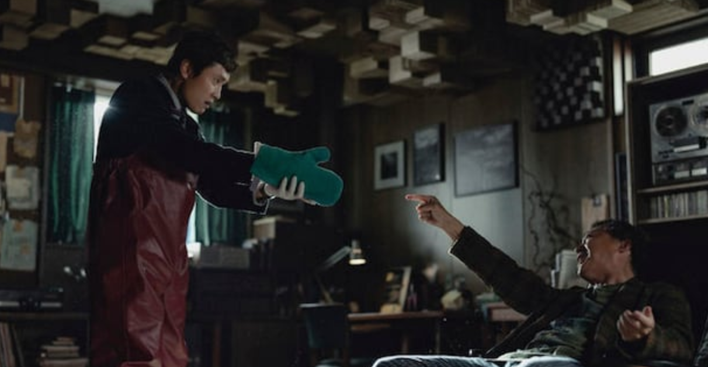
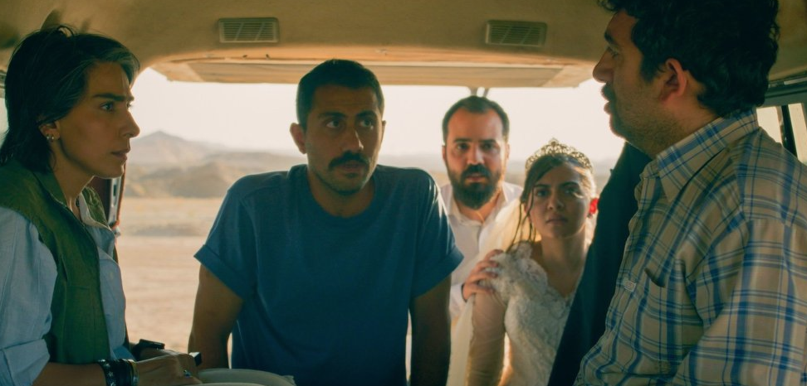
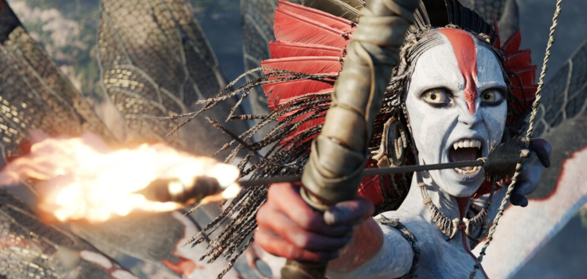

|
Yes, it’s Jan 1 but there are still a handful of films I’d like to catch up on before cementing my top 25 of 2025. In the meanwhile, below are ten of my favorite performances of the year, lead and supporting, alphabetical by first name. Because! Armando / Marcelo — Wagner Moura To speak to the turns The Secret Agent’s narrative takes would spoil the impact of the choices made, but Moura simply fitting in at a new workplace and reacquainting himself with his circle of intimates upon returning to his home town is a compelling center through the film’s long runtime. The film fulfils the want left by last year’s I’m Still Here, a more straightforward piece that deals with a similar era and subject matter but robs us of Moura’s screen presence by the second act, much as his absence is impactful after a strong start. Grace — Jennifer Lawrence Lawrence’s Grace is wild and riotously funny to watch. Her performance to me perfectly externalises her interior perspectives on the spaces and character around her. I can feel my skin crawl with hers, always on her side. The self-reflecting types among us can certainly admit to letting bad moods dominate, lashing out unfairly and realising error, seeing blue in retrospect when red dominated in the moment. Lawrence’s performance in Die My Love WILL plop you right into an undeniable lived existence in which you WILL want to punch your husband Robert Pattinson’s sweet little STUPID FUCKING FACE for singing along to a song on the radio that maybe you HATE today but LIKE USUALLY because NOTHING IS RIGHT, OK?! Fr. Jud Duplenticy / James Blaine "JB" Mooney — Josh O'ConnorO’Connor is WORKING and in my two favorite performances of the year (of his four lead performances) he plays a man with and a man without a conscience, in Wake Up Dead Man and The Mastermind respectively. His detective priest both has the most laugh lines in a funny film and exists on the talks a lot side of performances, while the other is more a man of action (and contemplation). Will he become a proper draw to the cinema for a wider audience? I hope so!  Lidia Yuknavitch — Imogen Poots It’s exciting to see those striking eyes carry the lead of The Chronology of Water, Stewart’s debut directorial effort. Poots plays a pretty staggering range of emotions and tones across this adaptation of Yuknavitch’s autobiographical work of the same name. Her interactions with Jim Belushi as Ken Kesey are a real highlight of the film. Yoo Man-soo — Lee Byung-hun Another lead whose performance is quite rich, balancing comedy and something like menace. Lee’s Man-soo is a perfect wife guy and his performance in No Other Choice features probably my favorite face acting of the year… Watching plots developed and laid, foiled and flailing perhaps but striking always. Sensei Sergio St. Carlos / Zsa-Zsa Korda — Benicio del Toro We could all use a bit more Sensei in our lives. If things are right in the world del Toro is gonna have another Oscar as One Battle After Another sweeps (?) in a few months, and for a role I strongly prefer. 🌊🌊 Shout out to his lovely lead turn in Anderson’s The Phoenician Scheme, a film that left me cold on first watch but that I expect would grow in my estimation with time and age.  Shiva — Mariam Afshari Basically our second lead, perhaps the film’s heart, Afshari’s Shiva connection to the kidnapped man in question and her role in the impromptu travelling party is the most compelling core of It Was Just An Accident. The boundaries of ‘polite behavior’ in extraordinary times are quite the thing. I hope every day we’re not soon so tested. Spike — Alfie Williams 28 Years Later features the strongest child performance of the year, a great lead performance generally. Enough so that I’m excited for DaCosta’s impending visit to The Bone Temple. Hope that one has a strong enough box office to justify a third and final entry in this fresh hell of a saga. Thia / Tessa, Rachel Kemp — Elle Fanning In a year of many siblings/twins played by one actor (see also: Mickey 17 👍👍, The Monkey 👍, Alto Knights ❓, Sinners 👍👍, The Shrouds 🪦🪦) Elle Fanning’s dual performances as Weyland-Yutani androids elevates Predator: Badlands beyond the otherwise totally fine PG-13 animated actioner, introducing a touch of humour and pathos while leaving me ~actually~ wanting more, and from a franchise that has sat firmly in a blind spot until now. — Her perfectly imperfect performance in Sentimental Value was a surprising turn that makes me hopeful for her prospects shouldering more dramatic leads sooner than later, and for years to come.  Varang — Oona Chaplin She’s front and center on the poster for a reason. If you’ve seen Avatar 3: Fire & Ash on that big ol’ IMAX screen down the street you’d get it. Please take these things for the stunning artifice they are. Like a good trip to the Chelsea galleries or MoMA or what have you, it won’t all be for you, but there’s really nothing like what Big Jim is up to with these things. ~Please~ don’t bother with them at home though. I do so hope we get another pair of these to spend more time with Varang though. Yes, I’d like some of that dust. Sue me! |


Thursday - Free Tasting! Friday - Free Tasting! Saturday - Free Tasting! 
|